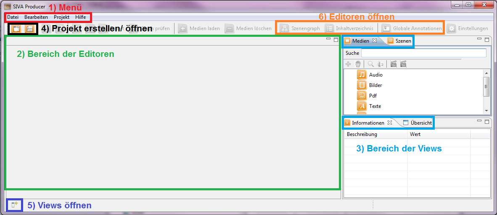

Oberfläche
Zuallererst können Sie sich einen Überblick verschaffen, wie der Startbildschirm aufgebaut ist, indem Sie sich das Überblicksbild
ansehen.

Die Oberfläche von SIVA ist in folgende Bereiche grob gegliedert:
- 1) Menü
- 2) Bereich der Editoren
- 3) Bereich der Views
- 4) Projekt erstellen/ öffnen
- 5) Views öffnen
- 6) Editoren öffnen
Eine genauere Erklärung der einzelnen Bereiche finden Sie hier.